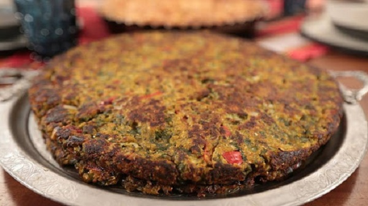

Hamsikoli
Hamsikoli veya Hamsili ekmek, hamsi, mısır unu, zeytinyağı ve çeşitli sebzelerle yapılan bir yemektir. Rize başta olmak üzere Doğu Karadeniz'de tüketilir.

Hamsili ekmek, Türk Patent ve Marka Kurumu tarafından tescillenmiş ve 2021 yılında Hopa Hamsili Ekmeği adıyla coğrafi işaret belgesi almıştır. Sıcak veya soğuk yenilebilir. Yanında salatalık ve ayran tercih edilir.
Tarif
Malzemeler
- 500 gram kılçıkları ayıklanıp yıkanmış hamsi
- 1 demet pazı
- 3-4 sap pırasa
- 1 demet maydanoz
- 1 demet dereotu
- 1 adet büyük baş kuru soğan
- 6-7 tane taze soğan
- 1 çay bardağı sıvı yağ
- Tuz
- Karabiber
- 3 su bardağı mısır unu
- Sıcak su
Yapılışı
- Sebzelerin hepsi yıkanarak, ince ince kıyılır.
- Bir kapta karıştırılarak üzerine ayıklanmış hamsileri eklenir.
- Tuz, karabiber, mısır unu, yağ ve sıcak su eklenerek, ekmek hamurundan biraz daha gevşek bir hamur yoğurulur.
- Tepsi tereyağıyla yağlanarak, içerisine dökülür.
- Üzerini düzlenerek 170 derecede ısıtılmış fırında, 1 saat kadar üzeri kızarana kadar pişirilir.
.png)